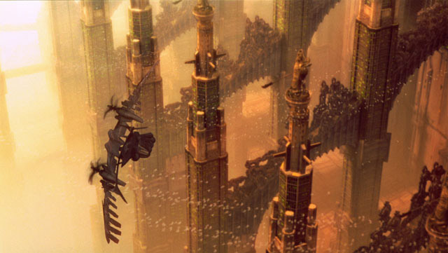
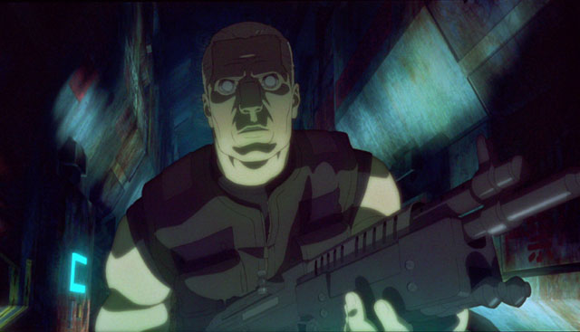
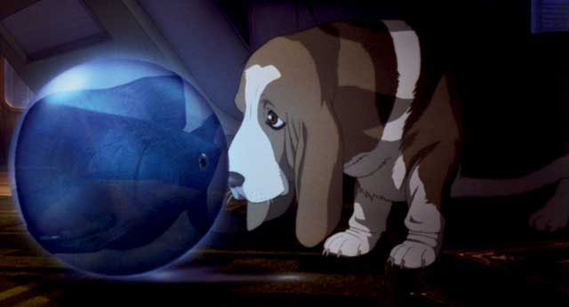
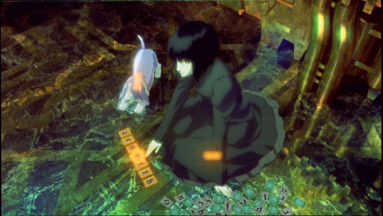
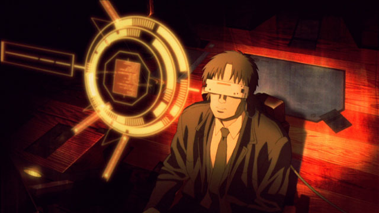
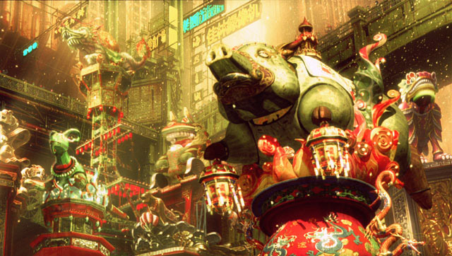

Movie review by : SFAM
Year : 2004
Directed by : Mamoru Oshii
Written by : Mamoru Oshii (screenplay), Masamune Shirow (manga)
Degree of Cyberpunk visuals : Very High
Correlation to Cyberpunk themes : Very High
Rating : 10/10

Major Motoko, the main character from the first Ghost in the Shell movie (which might still make an appearance here...) is no longer here, and the rest of the cast has to pick up the pieces and move on. Bateau (Ôtsuk), major motoko's partner from the first movie, and a cyborg detective for the anti-terrorist unit Public Security Section 9, investigates the case of a female robot - one created solely for sexual pleasure - who slaughtered her owner. Togusa, the mostly human detective that Motoko found in Ghost 1 is assigned as Bateau's partner. The plot thickens as the movie progresses, and the two are sent to a number of incredibly cyberpunk looking locations to uncover the truth.
Overall, this movie has the feeling of a cast trying to cope when the major star has left. Similar to the Borg Encounter when Picard is removed, or maybe some of the first star trek series when Captain Kirk is lost somewhere doing green chicks, Motoko's disappearance dominates a most of the back story. We get to see almost a character study of Bateau, a mostly cyborg being who has suffered the loss of the closest person alive to him struggle to maintain meaning in his life
and Togusa failing to live up to Bateau's expectations as a partner. While the characters are able to work fine within the plot, the movie suffers from the lack of both sex appeal and the lack of a truly dominant character.
Similar to other Oshii films, there are instances where the plot gets put on hold to allow the philosophy to explored. This is a different sort of pacing (again copied by the matrix) which some like and others find pretentious (I like it!). The philosophy breaks are interesting, but only get fully connected at the end. Additionally, the plot is twisting enough and only clarified in the end that a second viewing would aid in comprehension.

Even if you don't like the metaphysical mumbo-jumbo or strange pacing, Ghost 2 should be seen as mandatory viewing for its truly mind blowing merging of computer imagery and hand drawn animation artistry. This is cyberpunk at its finest! Truly, Neuromancer's William Gibson would be floored with the continually awe-inspiring scenery that's intermixed with the grittiest of settings. I lost count of the number of sets I would have loved to freeze and place on my wall. From the creation of robots complete with fiber optic circuitry and positronic brains, to the dingy alleys of the underworld, the vast expanses of the futuristic building-scapes, this movie employs every color palette in the most effective manner imaginable. Often, you almost stop paying attention to the subtitles to just take in the scene in all its heavenly glory.
On top of this, we get trademark moments of Oshii pacing. Oshii is fully content to leave the dialogue aside for a while and let the mood develop from the visuals and sound. Very few movies do this effectively - Avalon and GITS:2 certainly come to the top of the list. In short, the pacing makes GITS:2 a fully immersive experience in a way that visuals alone couldn't do.

GITS 2 Philosophy: In looking at the philosophy, the first Ghost was dominated by a discussion of what it means to be human and being alive. It culminated in the creation of a new species - the merging of a sentient program called the puppet master with Motoko, an alive human complete with a soul (ghost). Without knowing the details of Ghost 2, one would have expected in seeing the first movie that Oshii would have explored this vast new experience in Ghost 2, Yet this was not to be, as instead the story takes a very different perspective to the ideas covered in the first movie. Innocence is really tracing the idea that what we "see" isn't at all real, and that reality as a concept needs significant revision. This is done in a variety of ways through mirror analogies, VR segments and discussions of whether there is a difference between artificial life and real life. In this sense, GITS2 is far more the philosophical sequel to Avalon.

Ghost 2 almost turns the perspective from Ghost one on its head and looks at what it means to be a sentient program and how even humans seeking to become fully cyborg struggle to attain this plateau of ever increasing sensory perception and understanding. Taking Decarte's notion ("I think, therefore, I am") that sentient life does not require a ghost, Ghost 2 explores the notion that a sentient program or robot (called a "doll") might NOT want to have a ghost, and looks at what happens when ghosts are foisted on dolls. Ideas taken for granted in the real world, like the demarcation between life and death get blended and rendered almost meaningless.
On Dolls: Let's go into a discussion of dolls for a moment: On one hand, dolls in our terms are purely fake, but in the eyes of a child, are actually "real" in the sense that they are assigned virtual persona and as an object and affect the behavior of the child. In effect, the notion of the child's mind being constrained to her head is challenged - the child's mind functions "virtually" in the doll. This notion of a doll is also examined in the sense that it contains our greatest fears - that all we are is a "shell" without something actually unique inside that makes us special. In making a cyborg "doll" that mimics a human - GITS2 poses that we are creating a human-looking shell that is sentient in the Descartes sense, but is not complete. Even worse, when given a facsimile of a ghost, we are doing real harm to the doll as the doll is now neither a stable sentient robot nor a human, but a bastardized thing in-between.
In total, there is this ongoing discussion of three types of "ultimate" life forms: God, Dolls, and animals. They all embody the notion of innocence. God (in this sense, almost synonymous with Major Motoko's new form) is all knowing so basic human frailties no longer affect her. Needs and desires that humans have are non-existent for God. Dolls, and in cyborg version of dolls - sentient robots, are also perfect in that they can think but don't fall prey to human inadequacies. Finally, Oshii argues animals such as dogs are innocent. Their joys in life are simple ones - Batou's dog scenes also serve to demonstrate that which is still "human" about Batou - everything else in his life has been rendered meaningless. In this sense, interestingly the dog takes on the same roll as a doll does with a child - This shows Batou's mind expressing its "virtual" humanity externally.

Throughout the movie are instances of humanity's self-gratification, extreme self-importance and the consequences of over-indulgence. From the enormous cathedrals to the dingy alleyways, to the making of dolls in our own "perfect" shell of ourselves, Oshii's message is that we are doing everything possible to hide ourselves from true humanity. The beautiful imagery of GITS 2 is the result. Freedom comes not through materialism, but through real "humanity." However, one wonders whether Oshii thinks real humanity is in anyway restricted to humans. At some level Oshii is saying our bodies are now obsolete, and that what makes us human, our shell, may not be the purview of humans.

As for the details of the merging of traditional hand drawn animation, there are a few scenes where the Babylon 5-like ships or statues don't quite fit, but for the most part, the expansive scenes have incredible depth, and the close-ups are as exquisite as a portrait. You are truly missing out on a feat of artistic beauty if pass this movie up. And overall, GITS:2 is clearly in of the best new cyberpunk movies out. Watch it - you won't be disappointed.